Aplicación web gamificada sobre Google Apps Script · Cuentas del centro (Google Workspace)
Contenido
1Qué es Misiones orbitalesLa actividad en un vistazo
2InstalaciónUna sola vez · unos 10 minutos
3Los tres enlacesConfiguración, alumnado y puente
4El día de claseLa campaña paso a paso
5Gestión desde la configuraciónAlumnos, estado, apuntes y nuevas campañas
6Problemas frecuentesY cómo resolverlos
Antes de empezar
Para instalarla necesitas tu cuenta del centro (@g.educaand.es) y que el alumnado use también su cuenta del centro: la app identifica a cada alumno por su correo, y eso solo funciona dentro del mismo dominio.
1Qué es Misiones orbitales
Es una actividad gamificada e individual de campo gravitatorio para una sesión de clase. Cada alumno crea un astronauta y completa misiones en las que tiene que obtener datos de simuladores interactivos y calcular un resultado.
9 misiones: 3 de ★, 3 de ★★ y 3 de ★★★ (18 estrellas en juego). Cada alumno elige cuáles hace.
Objetivo: 7 ★, lo que obliga a hacer al menos tres misiones, alguna de ellas difícil.
Un solo intento por misión, y una misión empezada no se puede abandonar.
Estrellas según la precisión del resultado: error menor del 5 % → todas las estrellas de la misión; menor del 10 % → una menos; menor del 25 % → dos menos; más, signo mal o en blanco → 0 ★.
Sin copias posibles: los datos de cada misión se generan a partir de la cuenta de cada alumno, así que dos compañeros nunca tienen los mismos números.
Antes de calcular, una predicción que no puntúa. Al entregar, la resolución completa y un diagnóstico si el error coincide con uno típico (olvidar el radio, usar mgh, unidades…).
Rangos según las estrellas (de Cadete a Leyenda estelar) y un puente de mando para proyectar en clase, con la clasificación y una ceremonia final.
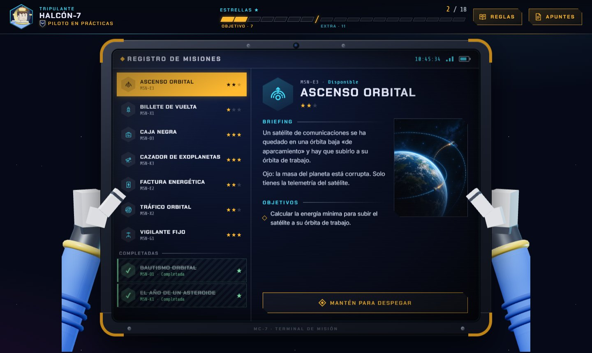
Panel de misiones: lista y ficha de la misión elegida.
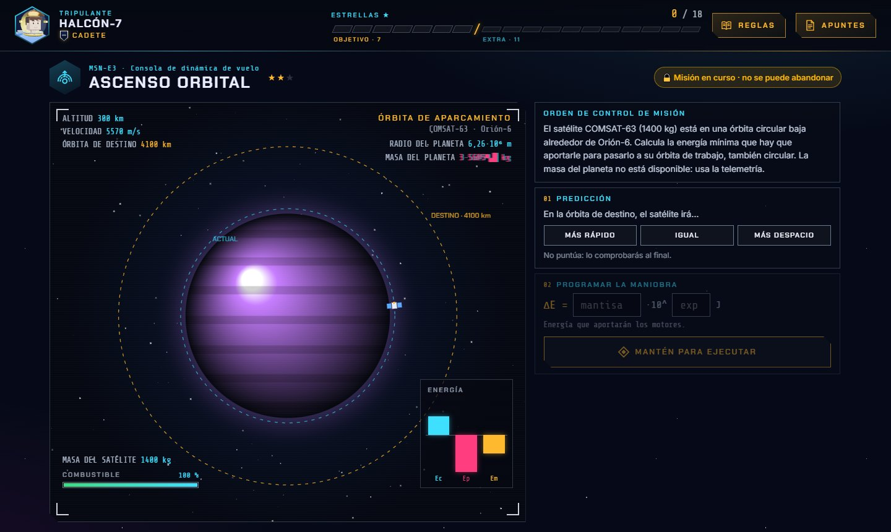
Misión en curso: simulador, predicción y respuesta.
2Instalación
Se hace una sola vez. Al terminar tendrás tu propia copia de la app, con tu propia hoja de resultados; nadie más ve los datos de tu alumnado.
En la barra de la izquierda, pulsa el icono ⓘ (Datos del proyecto).
Arriba a la derecha, pulsa el icono de las dos hojas: Hacer una copia. Se abrirá tu copia, llamada «Copia de Misiones orbitales» (o «Copy of Misiones orbitales»).
Cámbiale el nombre si quieres (pulsando sobre el título) y, desde Google Drive, muévela a la carpeta donde quieras tener la actividad: la hoja de resultados se creará en esa misma carpeta.
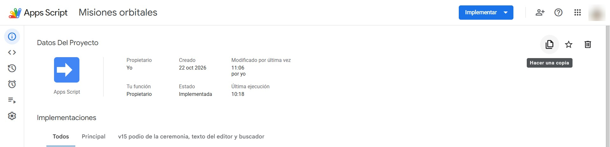
Datos del proyecto: el botón «Hacer una copia» está arriba a la derecha.
Tu copia empieza de cero
La copia se lleva el código, pero no la hoja de resultados ni los apuntes del autor: los configurarás tú en los pasos siguientes.
2.2Implementa la aplicación web
En tu copia, pulsa el botón azul Implementar › Nueva implementación.
Junto a «Seleccionar tipo», pulsa el engranaje ⚙ y elige Aplicación web.
Rellena los campos así:
Campo
Valor
Descripción
La que quieras, por ejemplo Misiones orbitales
Ejecutar como
Yo (tu correo). Así los alumnos guardan sus resultados en tu hoja sin tener acceso a ella.
Quién tiene acceso
Cualquier usuario de Consejería de Educación (las cuentas del centro). No elijas «Cualquier usuario»: la app necesita saber quién es cada alumno.
Pulsa Implementar. Google te pedirá permisos: pulsa Autorizar acceso, elige tu cuenta y, en la lista de permisos, marca Seleccionar todo («Select all» si la pantalla sale en inglés) antes de continuar.
Al terminar verás la URL de la aplicación web (acaba en /exec). Pulsa Copiar y guárdala: es tu enlace de configuración.
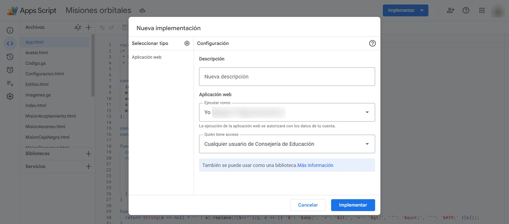
Diálogo «Nueva implementación» rellenado.
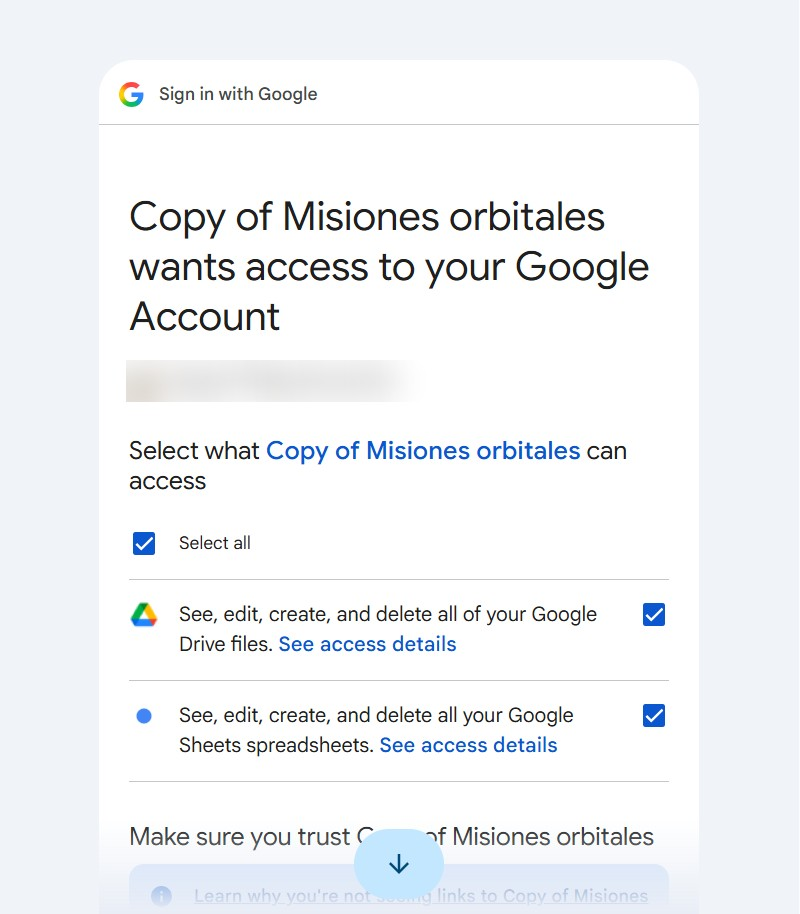
Pantalla de permisos (puede salir en inglés). Marca «Seleccionar todo»: la casilla de Google Drive es imprescindible.
Si aparece «Google no ha verificado esta aplicación»
Es normal: la app es tu propia copia. Pulsa Configuración avanzada y después Ir a Misiones orbitales (no seguro).
2.3Autoriza el permiso de Google Drive
La app guarda la hoja de resultados en la misma carpeta que el script. Para eso necesita un permiso de Drive que la pantalla de implementar a veces no pide del todo, así que hay que concederlo a mano una vez:
En el editor de tu copia, abre el archivo Codigo.gs en la lista de archivos.
En la barra de herramientas superior, en el desplegable de funciones, elige autorizar y pulsa ▷ Ejecutar.
Si aparece la pantalla de permisos (la misma del paso 2.2), marca la casilla de Google Drive (o «Seleccionar todo») y continúa.
En el «Registro de ejecución» de abajo debe aparecer: «Permisos concedidos. Las hojas de resultados se crearán en la carpeta…»
¿Y si me lo salto?
La app funciona igual, pero la hoja de resultados se creará en «Mi unidad» en lugar de en tu carpeta. La configuración te avisará de que falta el permiso.
2.4Primera puesta en marcha
Abre la URL que copiaste en el paso 2.2 (la que acaba en /exec). Como eres el dueño, entrarás en la Configuración.
Escribe el nombre de la hoja (se propone el curso actual) y pulsa Crear hoja de resultados. Tarda unos segundos.
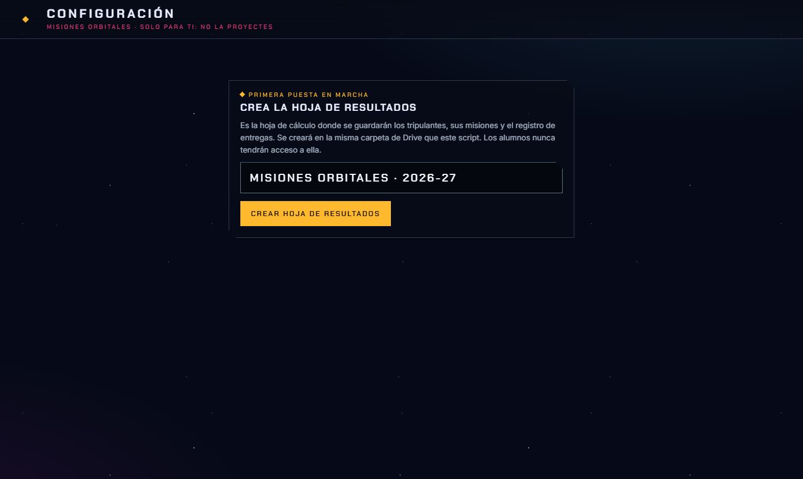
Primera puesta en marcha: creación de la hoja de resultados.
2.5Apuntes en PDF (opcional)
Si quieres que el alumnado pueda consultar tus apuntes durante la actividad, sube el PDF a tu Drive, copia su enlace (botón derecho › Compartir › Copiar enlace) y pégalo en la caja Apuntes de la configuración. Aparecerá un botón Apuntes en la barra de los alumnos, que abre el PDF en una ventana que pueden mover y redimensionar.
No hace falta compartir el PDF
La app se lo envía a los alumnos aunque el archivo sea privado.
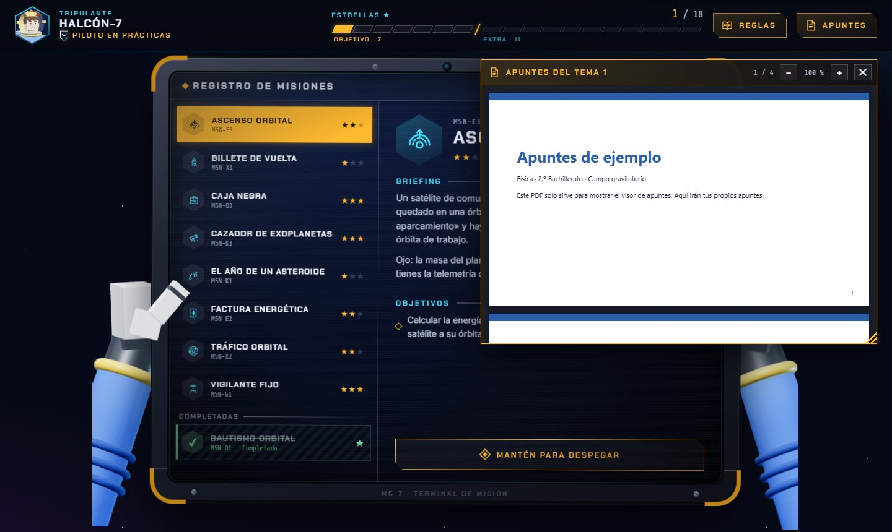
Ventana de apuntes abierta sobre el panel de misiones (con un PDF de ejemplo).
3Los tres enlaces
Toda la app funciona con la URL de tu implementación. Lo que cambia es el final:
Enlace
Para quién
Qué abre
…/exec
Solo tú
Configuración: hoja de resultados, estado de la campaña, apuntes y tripulación. Contiene correos: no la proyectes.
…/exec?vista=alumno
El alumnado
La app de los alumnos. Es el enlace que compartes, por ejemplo en Classroom.
…/exec?vista=puente
Solo tú (proyector)
Puente de mando: la tripulación en directo, la clasificación y los botones de la campaña.
No te preocupes por equivocarte de enlace
Un alumno que abra cualquiera de los tres llega siempre a su app; la configuración y el puente solo se abren con tu cuenta. Los dos últimos enlaces los tienes listos para copiar en la configuración, en la caja Enlaces.
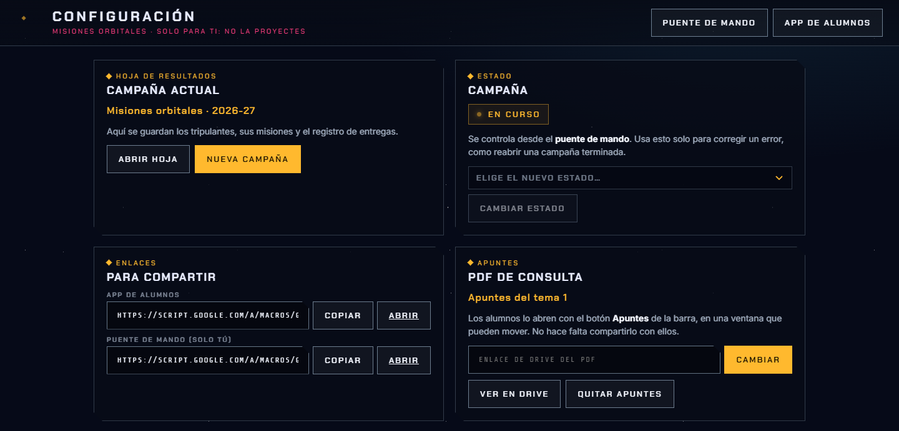
Configuración: hoja de resultados, estado de la campaña, enlaces y apuntes.
4El día de clase
La actividad está pensada para una sola sesión. Tú la diriges desde el puente de mando, proyectado en la pizarra (pulsa F11 para verlo a pantalla completa): un único botón, arriba a la derecha, va avanzando la campaña.
Antes de la sesión
Haz un ensayo con un par de cuentas de alumno (o algún voluntario): recorre la campaña completa y comprueba cómo se ve el puente desde el fondo del aula.
Después del ensayo, en la configuración, pulsa Nueva campaña para empezar con la hoja limpia.
Publica el enlace …/exec?vista=alumno en Classroom.
CerradaEstado inicial
Los alumnos que entran ven «Campaña no iniciada · Esperando a Control de Misión». No tienen que recargar: avanzarán solos cuando abras el hangar. En el puente, el botón dice Abrir hangar.
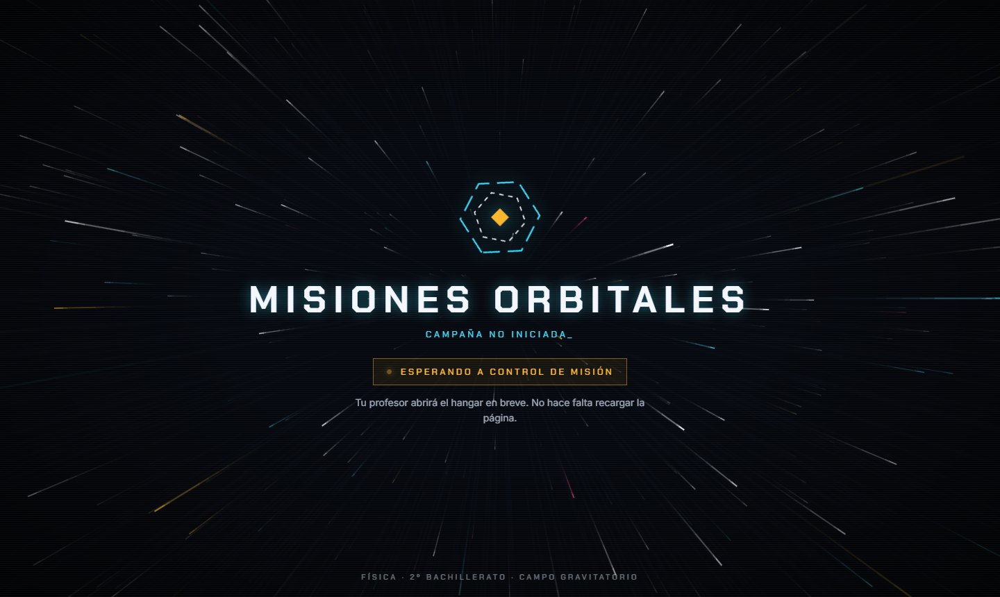
Alumno: esperando.
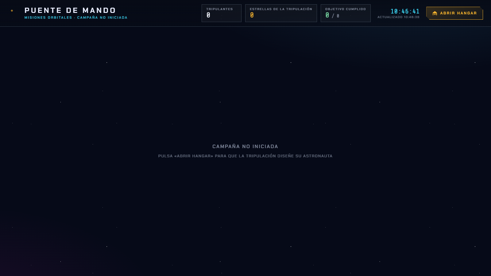
Puente: campaña no iniciada.
HangarTras pulsar «Abrir hangar»
Cada alumno diseña su astronauta y elige su indicativo: el nombre con el que aparecerá en el puente (3 a 20 caracteres, único en la clase; así nadie ve correos ni nombres reales). El astronauta y el indicativo son definitivos. Al confirmarlo, el alumno espera en la plataforma de lanzamiento y puede repasar las reglas.
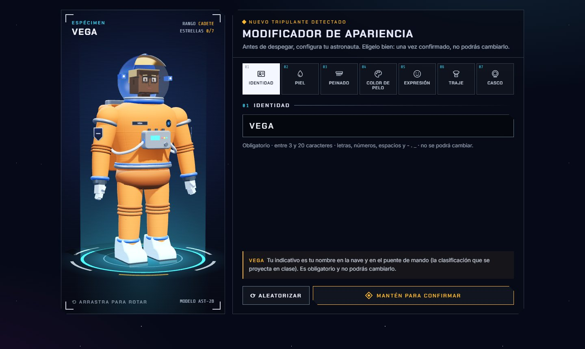
Alumno: diseño del astronauta.
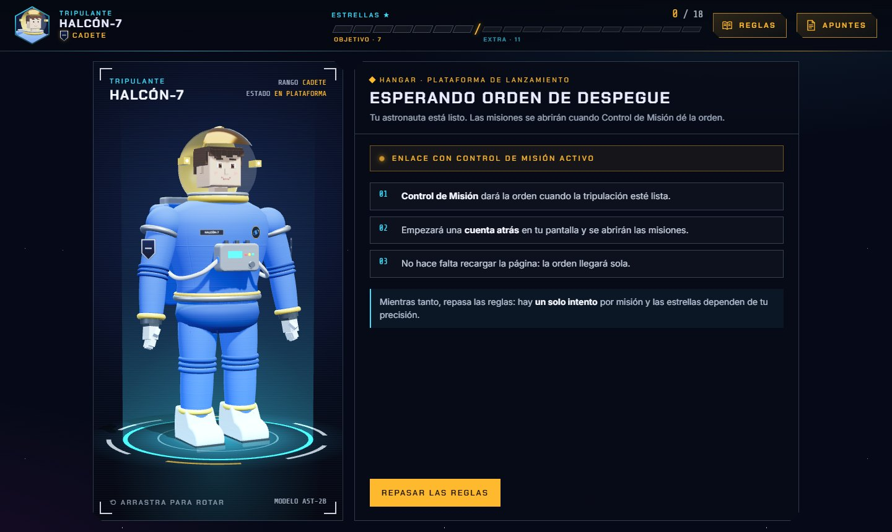
Alumno: esperando la orden de despegue.
En el puente van apareciendo las tarjetas, y la cabecera indica cuántos están listos y cuántos siguen en el hangar. Cuando estén casi todos, pulsa Iniciar campaña: no hace falta esperar a los más lentos, que podrán terminar su astronauta ya con el reloj en marcha.
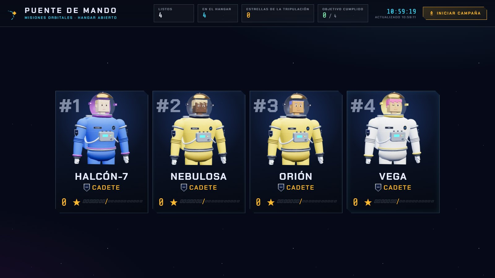
Puente: la tripulación llegando al hangar.
En cursoTras pulsar «Iniciar campaña»
Aparece una cuenta atrás de 10 segundos a la vez en el proyector y en todas las pantallas, y se abren las misiones. Durante la campaña, el puente se actualiza solo: las tarjetas se ordenan por estrellas (si hay empate, va delante quien llegó antes), los tres primeros llevan medalla, y hay efectos al ganar estrellas, al ascender de rango y al cumplir el objetivo.
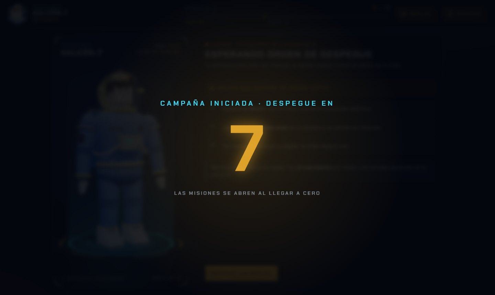
Cuenta atrás.
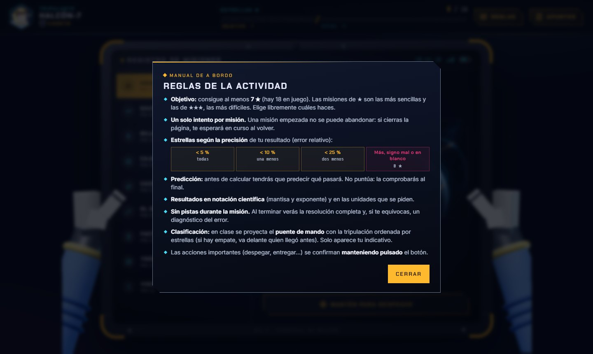
Reglas, siempre a mano en el botón «Reglas».
Puente durante la campaña, con quién está en misión en cada momento.
FinalizadaTras pulsar «Terminar campaña»
Para terminar hay que mantener pulsado el botón de confirmación. Desde ese momento no se aceptan envíos y las misiones a medias no cuentan (0 ★): avisa en voz alta un par de minutos antes. Cada alumno ve su informe final, sin su puesto en la clasificación.
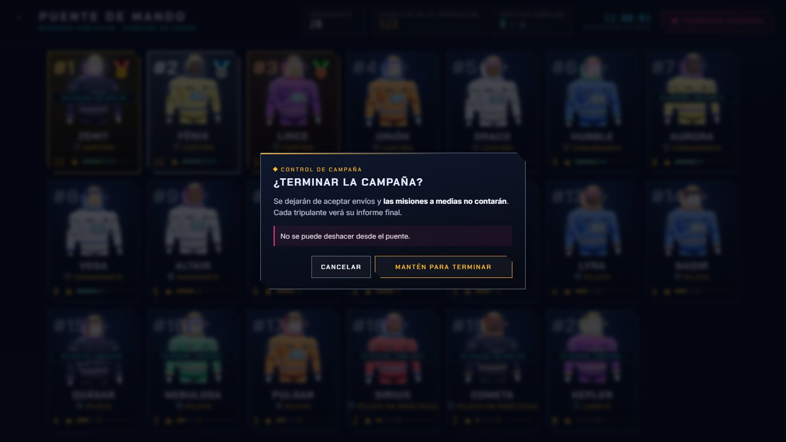
Puente: confirmación para terminar.
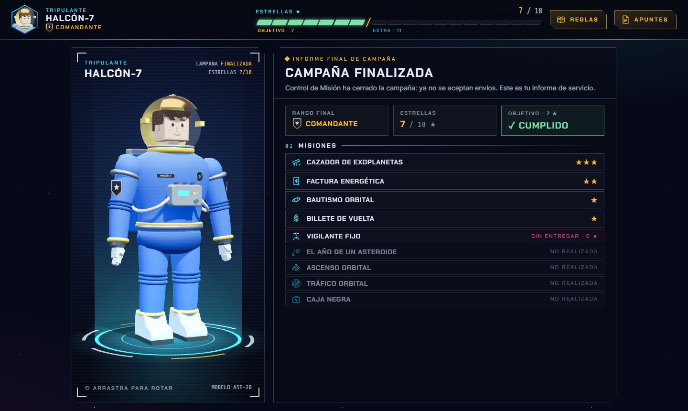
Alumno: informe final.
CeremoniaBotón final del puente
El botón pasa a Ceremonia: un podio en 3D con los tres primeros, que se revelan en orden (tercero, segundo y primero, con confeti). Puedes repetirla las veces que quieras; se cierra con «Volver al puente» o con Esc.
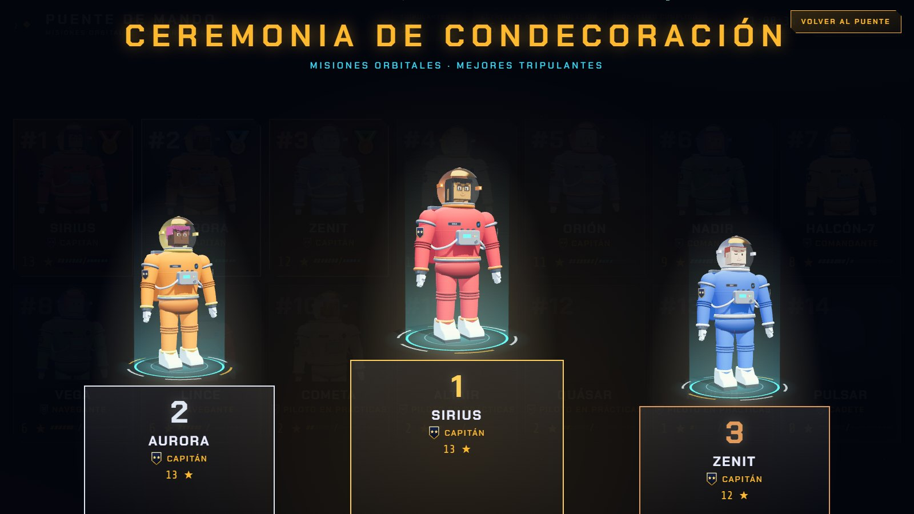
Ceremonia de condecoración.
5Gestión desde la configuración
5.1Tripulación
La tabla muestra a todos los alumnos que han entrado, con su indicativo, estrellas, misiones y la misión en curso. Tiene un buscador y tres acciones por alumno (todas piden confirmación):
Acción
Para qué sirve
Desbloquear
Libera la misión en curso, por ejemplo si un alumno la empezó por error. Podrá volver a empezarla, con los mismos datos.
Reiniciar
Borra todas sus misiones y estrellas. El astronauta y el indicativo se conservan. No se puede deshacer.
Rediseñar avatar
La próxima vez que entre, pasará otra vez por el editor del astronauta.
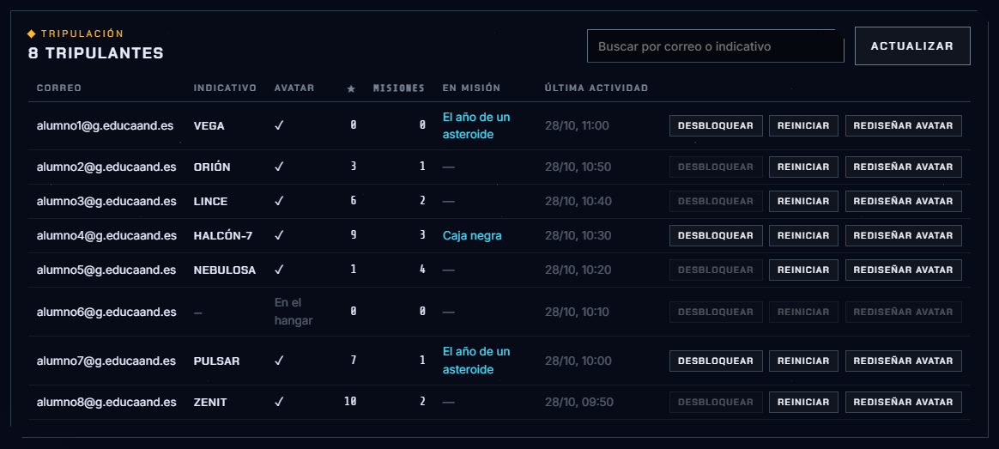
Tabla de tripulación (datos ficticios).
5.2Estado de la campaña
La campaña se controla desde el puente, pero si te equivocas (por ejemplo, terminas antes de tiempo) puedes cambiar el estado a mano desde la configuración. Si la vuelves a poner «En curso», las misiones se abren al momento, sin cuenta atrás, y los alumnos lo notan en unos segundos.
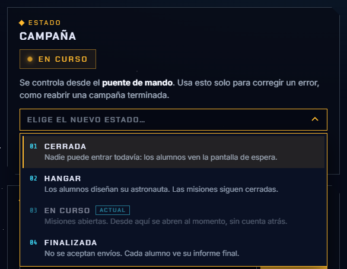
Cambio manual del estado.
5.3La hoja de resultados
Con Abrir hoja llegas a la hoja de cálculo. Tiene tres pestañas:
Alumnos: una fila por alumno con correo, indicativo, estrellas totales, rango, número de misiones y las estrellas de cada misión. A partir de aquí puedes calcular la nota como prefieras.
Registro: cada inicio y cada entrega, con la hora, la respuesta, la solución y el error cometido.
Campaña: el estado y las horas de apertura, inicio y fin.
5.4Nueva campaña (cada curso o cada grupo)
El botón Nueva campaña crea una hoja de resultados nueva y vacía y la app pasa a usarla: toda la tripulación empieza de cero, astronauta incluido, y la campaña queda cerrada. La hoja anterior se conserva intacta en tu Drive.
Varios grupos
Si das clase a dos grupos en días distintos, usa una nueva campaña para cada uno. Si los quieres a la vez, haz una copia del script por grupo (cada copia tiene su propia hoja).
5.5Restablecer la app
Al final de la configuración está la zona de peligro: el botón rojo desconecta la hoja de resultados y deja la app como recién instalada. La hoja no se borra. El botón de confirmación tarda 10 segundos en activarse, para evitar sustos.
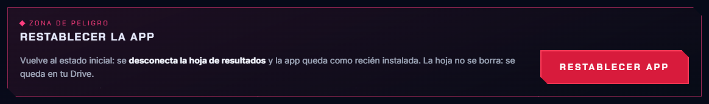
Zona de peligro.
6Problemas frecuentes
Los alumnos ven «La actividad aún no está preparada».Todavía no has creado la hoja de resultados: abre tu enlace /exec y créala (paso 2.4).
La hoja de resultados aparece en «Mi unidad» y no en mi carpeta.Falta el permiso de Drive: sigue el paso 2.3 y marca la casilla de Google Drive. La configuración muestra un aviso mientras falte.
Un alumno ve «No se ha podido identificar tu cuenta».Tiene que entrar con su cuenta del centro. Si en su navegador hay varias cuentas abiertas, que use un perfil de Chrome solo con la del centro.
Al entrar toda la clase a la vez, a alguien le sale un error.Que pulse Reintentar. Si estaba esperando la apertura del hangar, la app lo vuelve a intentar sola.
Un alumno cerró la página en mitad de una misión.No pasa nada: al volver a entrar, la misión le espera abierta y con los mismos datos (puede que tenga que volver a escribir lo que no había entregado).
Un alumno empezó una misión por error.Desde la configuración, Desbloquear. Si la tenía abierta, al intentar entregar la app le devuelve al panel.
He terminado la campaña antes de tiempo.En la configuración, cambia el estado a «En curso».
Un indicativo no se acepta.Solo admite letras, números, espacios, guion, punto y guion bajo, y tiene que empezar por letra o número. Tampoco puede repetir el de un compañero.
Quiero que un alumno cambie su astronauta.En la tabla de tripulación, Rediseñar avatar.
¿Aparezco yo en la clasificación si pruebo la app de alumnos?No: el profesor nunca sale en el puente, aunque se cree un astronauta para probar.
¿Cómo actualizo a una versión nueva de la app?Haz una copia nueva del script original y repite la instalación. Tus campañas anteriores siguen en sus hojas de resultados.